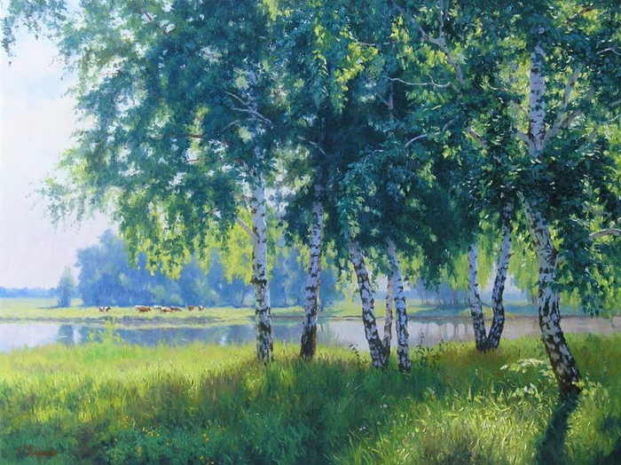

BECHA
Очень богат русский язык словами, относящимися к временам года и к природным явлениям, с ними связанным.
Возьмем хотя бы раннюю весну. У неё, у этой ещё зябнувшей от последних заморозков девочки-весны, есть в котомке много хороших слов.
Начинаются оттепели, ростепели, капели с крыш. Снег делается зернистым, ноздреватым, оседает и чернеет. Его съедают туманы. Постепенно развозит дороги, наступает распутица, бездорожье. На реках появляются во льду первые промоины с черной водой, а на буграх — проталины и проплешины. По краю слежавшегося снега уже желтеет мать-и-мачеха.

ЛЕТО
С этого лета я навсегда и всем сердцем привязался к Средней России. Я не знаю страны, обладающей такой огромной лирической силой и такой трогательно живописной — со всей своей грустью, спокойствием и простором, — как средняя полоса России. Величину этой любви трудно измерить. Каждый знает это по себе. Любишь каждую травинку, поникшую от росы или согретую солнцем, каждую кружку воды из летнего колодца, каждое деревце над озером, трепещущее в безветрии листьями, каждый крик петуха, каждое облако, плывущее по бледному и высокому небу.

ОСЕНЬ
Невозможно перечислить приметы всех времен года. Поэтому я пропускаю лето и перехожу к осени, к первым ее дням, когда уже начинает «сентябрить».
Увядает земля, но еще впереди «бабье лето» с его последним ярким, но уже холодным, как блеск слюды, сиянием солнца. С густой синевой небес, промытых прохладным воздухом. С летучей паутиной («пряжей богородицы», как кое-где называют ее до сих пор истовые старухи) и палым, повялым листом, засыпающим опустелые воды. Березовые рощи стоят, как толпы девушек-красавиц, в шитых золотым листом полушалках. «Унылая пора — очей очарованье».